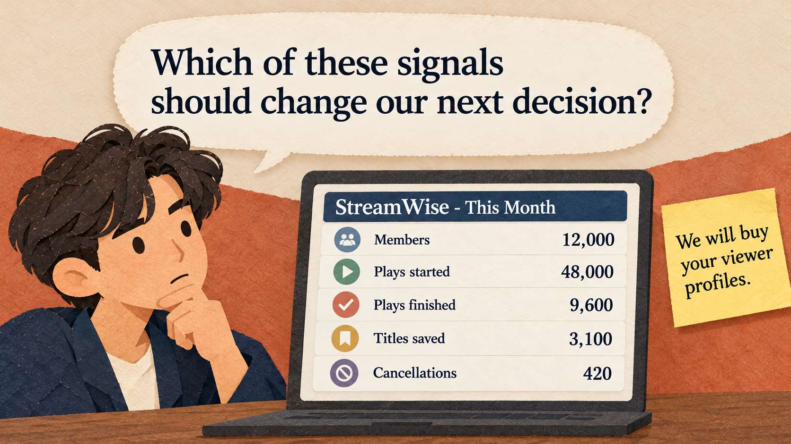

StreamWise is a new streaming service for university students. Members pay $5.00 a month to watch shows and movies. Jun is its founder.
| MEASURE (ONE MONTH) | VALUE |
|---|---|
| Members at the start of the month | 12,000 |
| Plays started | 48,000 |
| Plays finished | 9,600 |
| Titles saved to "My List" | 3,100 |
| Members who cancelled | 420 |
| Monthly price per member | $5.00 |
A company decides which customer signals to collect, which business decision each signal will improve, and how to keep customers' trust. Collecting more data does not make a company stronger by itself. A company gains an advantage when a small set of useful signals changes a decision, the company measures the result, and the next decision becomes better. This repeating cycle is the data feedback loop.
Write one answer from each column heading. If a number is not a signal (not a customer action), skip Q1 to Q3.
| STREAMWISE DATA | SIGNAL? YES OR NO | Q1: HOW CLEAR? STRONG OR WEAK | Q2: TELLS US? LIKE OR UNHAPPY | Q3: WHEN? EARLY OR LATE |
|---|---|---|---|---|
| Members at the start: 12,000 | ______ | ______ | ______ | ______ |
| Plays started: 48,000 | ______ | ______ | ______ | ______ |
| Plays finished: 9,600 | ______ | ______ | ______ | ______ |
| Titles saved to "My List": 3,100 | ______ | ______ | ______ | ______ |
| Members who cancelled: 420 | ______ | ______ | ______ | ______ |
| Monthly price: $5.00 | ______ | ______ | ______ | ______ |
| STREAMWISE DATA | SIGNAL? YES OR NO | Q1: HOW CLEAR? STRONG OR WEAK | Q2: TELLS US? LIKE OR UNHAPPY | Q3: WHEN? EARLY OR LATE |
|---|---|---|---|---|
| Members at the start: 12,000 | No | - | - | - |
| Plays started: 48,000 | Yes | Weak | Like | Early |
| Plays finished: 9,600 | Yes | Strong | Like | Early |
| Titles saved to "My List": 3,100 | Yes | Strong | Like | Early |
| Members who cancelled: 420 | Yes | Strong | Unhappy | Late |
| Monthly price: $5.00 | No | - | - | - |
Not signals: members is a count, and the price is set by StreamWise. Plays started shows only weak liking: just 20% were finished.
Record a signal.
Ask what it may mean.
Change one action.
Compare one number.
Keep or change the action.
The strategy has four rules. Each rule protects one part of this loop.
First name the decision you want to improve. Then collect only the signals that can change it.
A campus cafe app wants to decide "which drink to promote on rainy days." It needs two signals: the weather and the drinks ordered that day. It does not need contact lists or browsing history.
"Let's collect everything and find something later." Data with no decision costs money to store and adds privacy risk, but improves nothing.
Prefer actions that show effort or repeat behavior: finishing, saving, buying again, searching for a specific item.
At StreamWise, 48,000 plays were started but only 9,600 were finished: 9,600 / 48,000 x 100 = 20%. A play started is a weak signal of interest; a play finished is stronger.
Treating a weak signal as proof. A viewer who stops after 10 seconds may dislike the show, or may have received a phone call.
Collect, interpret, change one action, measure the result, and learn for the next decision.
Students who finish a cooking show often save other cooking shows. StreamWise adds a "More easy cooking" row for them and measures their churn for one month. If churn falls from 3.5% to 2.5%, the row is kept; if not, it is changed.
Changing something but never measuring the result. Without the measure step, the company cannot learn whether the data helped.
Customers share data more willingly when they understand the purpose and receive something useful in return.
A sign-up screen says: "We use what you finish and save to recommend shows. We never sell your viewing history." Members can turn this off at any time.
Collecting or selling data in ways customers would not expect. Even accurate data can damage the brand if customers feel watched.
Netflix uses what members watch, finish, and search for to decide which titles and which artwork to show each member. It tests a change on a group of members and keeps it only if viewing improves. Netflix researchers reported that recommendations influence about 80% of the hours members stream (Gomez-Uribe and Hunt, 2015).
Since 2015, Spotify has given each listener a new personalized playlist every Monday. It is built from songs the listener plays, saves, adds to playlists, and skips.
From 2008, Google estimated how many people had the flu by counting flu-related searches. In February 2013, it estimated more than twice the share of flu doctor visits that the U.S. Centers for Disease Control and Prevention (CDC) later reported (Lazer and others, 2014). Google stopped publishing the estimates in 2015.
The New York Times reported in 2012 that Target used shopping signals, such as unscented lotion and certain vitamins, to predict which customers were pregnant and mailed them baby-product coupons. A father complained after his teenage daughter received these coupons.
| EXAMPLE | RESULT | THE RULE THAT DECIDED IT |
|---|---|---|
| Netflix | Good | Tests each change and measures it (Rule 3) |
| Spotify | Good | Strong signals, and value back to the listener (Rules 2 and 4) |
| Google Flu Trends | Bad | Weak signal, never corrected (Rules 2 and 3) |
| Target | Bad | Accurate, but no consent or trust (Rule 4) |
Try a change on one group, not on a similar group, and compare the same number.
Without the comparison group, you cannot tell whether orders rose because of the coupon or because of something else, such as rainy weather.
Lower churn means more members stay and keep paying.
What you give up to get something you value more.
Example: a fitness app refuses $2.00 per user from an advertiser (gives up money) to protect users' trust and its subscriptions (gains).
A promise, written before you start, about which result would make you change your decision.
Example: "If churn does not fall below 4% in 90 days, we will try a different plan."
The result, not opinion, decides.
Decision: which restaurants to show at the top of the app at lunchtime.
(b) Three orders in one month. The student paid money again and again.
(e) "Favorites" and (c) 5 stars are also useful, but show less effort than repeat orders.
(a) a 2-second view and (d) a scroll.
They can mean dislike, a mistake, or simply that the student was not hungry.
FitU is a campus gym app with 2,000 members. Last month 160 members cancelled.
Many members book a fitness class but do not attend it.
Churn rate = 160 / 2,000 x 100 = 8%
12,000 members / $5.00 per month / churn 3.5%
An advertiser will pay $1.00 per member per month for detailed viewing histories.
In a StreamWise survey, 30% of members said they would cancel if their viewing history were sold.
Ask permission to use three signals (finished titles, saved titles, searches) only to improve recommendations. Never sell them.
Goal: lower monthly churn from 3.5% to 2.5%.
FitTrack is a running app. An insurance company offers $2.00 per user per month for location history.
Name one strong and one weak signal for a business decision and explain the difference.
Complete all five steps of a feedback loop with one measurable result.
Explain why selling customer data can cost more than it earns.
Gomez-Uribe, C. A., and Hunt, N. (2015). The Netflix Recommender System: Algorithms, Business Value, and Innovation. ACM Transactions on Management Information Systems.
Lazer, D., Kennedy, R., King, G., and Vespignani, A. (2014). The Parable of Google Flu: Traps in Big Data Analysis. Science.
Duhigg, C. (2012). How Companies Learn Your Secrets. The New York Times Magazine.
Hagiu, A., and Wright, J. (2020). When Data Creates Competitive Advantage. Harvard Business Review.